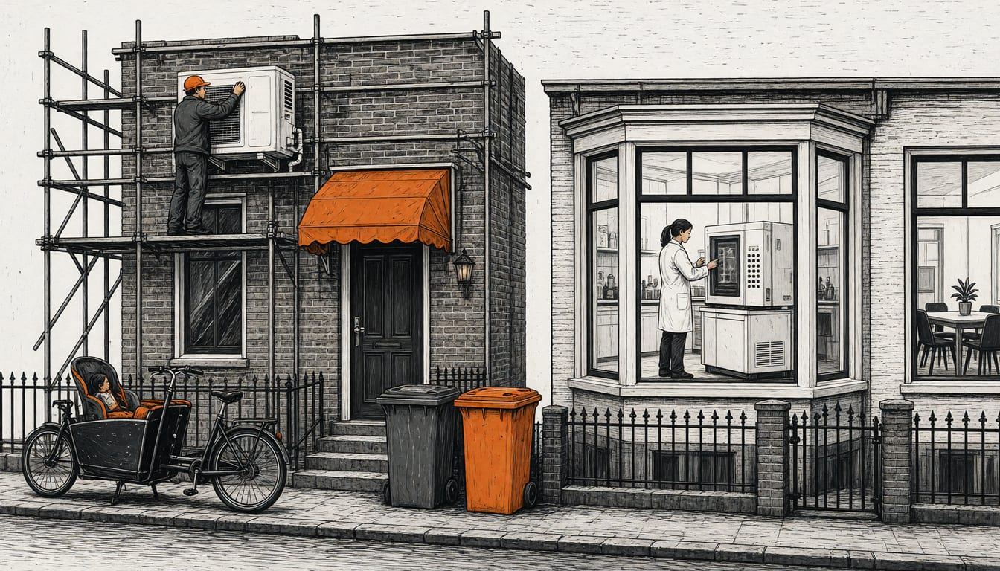

Dutch government calls US chip export bill unacceptable
A bill in Congress would let Washington decide whether ASML may still sell to China. Minister Sjoerdsma says the cabinet is working to get it off the table.

The Hague has called a US attempt to dictate the export rules for Dutch chipmakers unacceptable. The US Congress is weighing the Match Act, de Volkskrant reported, a bill that would let Washington decide whether ASML may still sell to China. It would also force the Netherlands and Japan to apply the same export rules as the United States.
Foreign trade minister Sjoerd Sjoerdsma told the House of Representatives that the government is doing everything to get the Match Act off the table. He said this last week, de Volkskrant reported. Prime Minister Rob Jetten had raised concerns about the bill during a visit to Washington in April.
ASML reported net sales of €11.7 billion for the third quarter of 2026, a record according to the company. In October, it had stuck to its earlier forecast that China would account for twenty percent of its business. The Netherlands and China have reaffirmed the importance of their bilateral consultations on export controls. They also recognised the need to keep exchanging views through existing channels about cooperation, including semiconductor technology.
The Match Act has been pending since April 2026, de Volkskrant reported. The Nvidia affair gave the bill new urgency in Congress. Senator Andy Kim wrote on Bluesky that the Match Act and BLADE Act, export controls legislation, must now be passed.
The Match Act could be passed before the end of 2026, according to de Volkskrant. In China, concern over the Match Act is growing, especially now that it is being pushed in Congress, according to Ajupress.